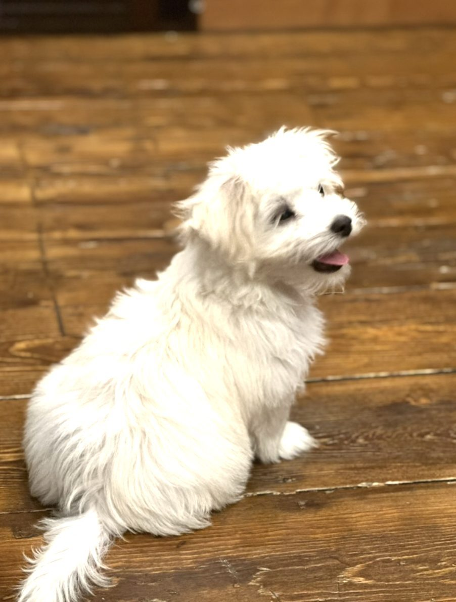
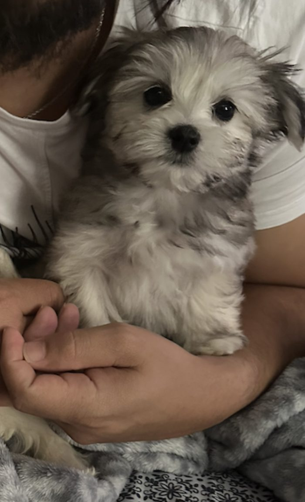
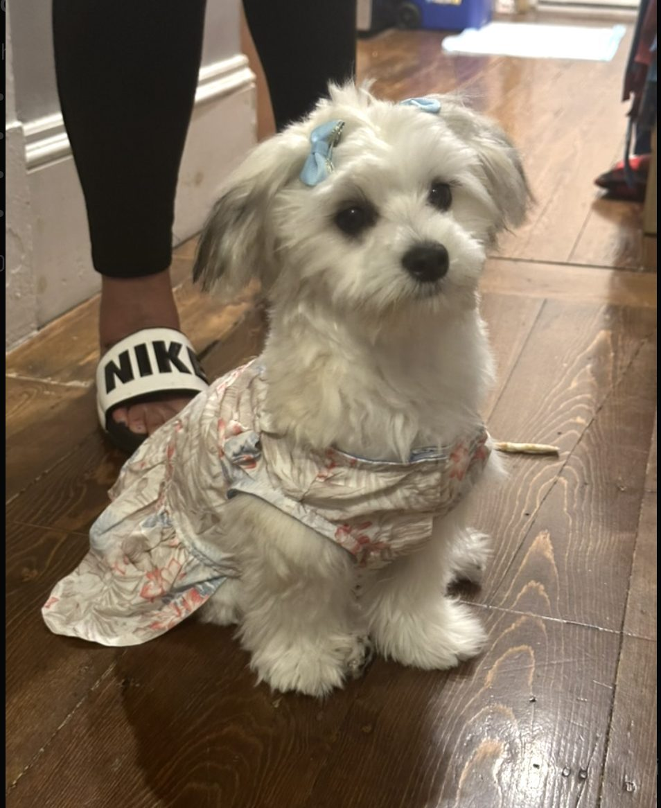
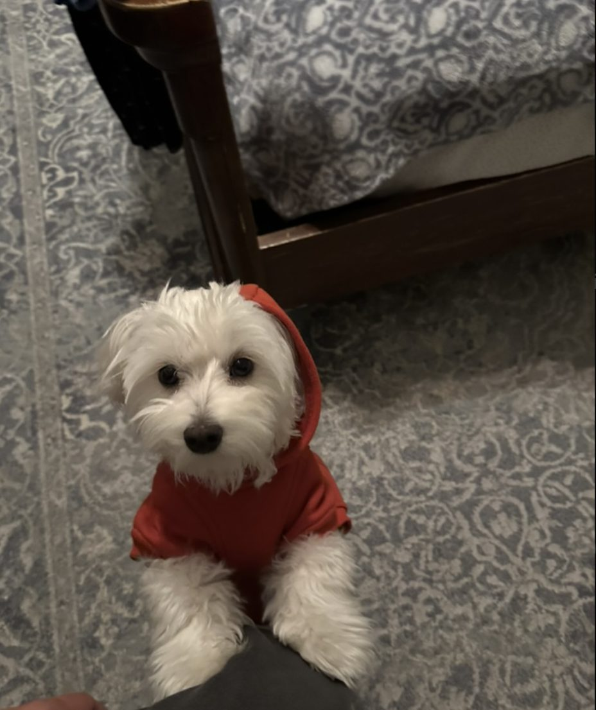

The Complete Maltese Care Guide (Grooming, Training, Heat Safety + DIY Haircuts)
This article may contain affiliate links. If you make a purchase through these links, we may earn a small commission at no extra cost to you.
The Maltese looks like a tiny cloud with a heartbeat — soft, bright, and always ready to be near you. But behind that “cute and small” vibe is a real companion dog with real needs: daily coat care, consistent training, dental hygiene, and smart heat management. When those pieces are handled well, Maltese dogs are one of the most joyful small breeds you can live with — playful, affectionate, and surprisingly brave.
Maltese have been companion dogs for centuries — the AKC even calls them “Ye Ancient Dogge of Malta.” Translation: they’re built for human life, not backyard life. :contentReference[oaicite:0]{index=0}
Who this guide is for: new Maltese owners, families with two dogs (especially siblings), anyone struggling with grooming/tear stains, and anyone who wants a clear, professional routine that’s easy to follow.
Swipe Gallery: Maltese Life in 4 Scenes 🐶


Quick Maltese Facts (What Makes This Breed Different)
Built for companionship: Maltese are classic “people dogs.” If left without structure, they can become clingy or anxious — not because they’re “bad,” but because the breed is wired to stay close.
Single-layer hair coat: Maltese have hair (not typical fur), which is why their coat can grow long and why brushing matters so much.
Small-breed health priorities: teeth, knees, and confidence training are a big deal for tiny dogs.
Temperament: Sweet, Smart, and (Sometimes) Surprisingly Bossy
A well-raised Maltese is affectionate and bright. They usually bond strongly with their humans, learn routines quickly, and love “being included.” They can also be a bit dramatic — not in a bad way, but in a “why are you leaving the room?” way. That’s why early training is not optional for Maltese… it’s what keeps them calm.
- Best traits: affectionate, playful, adaptable, cute alert watchdog
- Common challenges: separation anxiety, barking at sounds, “small dog confidence issues”
- Owner skill needed: consistent routines + gentle training (not harsh corrections)
Why Maltese Siblings Can Become “Too Attached”
When two puppies grow up together, it can create a special bond — and sometimes a problem: one dog becomes confident, the other becomes dependent. People often call this “littermate syndrome.” It doesn’t mean you did anything wrong. It means the dogs learned that “my sibling = safety.”
Real-life example (what you described): one sibling is fine going out alone, while the other freezes, refuses to walk, or panics without the sibling. That’s dependence — not stubbornness.
What it looks like
Dependence signals:
- won’t walk/eat/play unless sibling is present
- stuck/frozen body language outside
- calls/whines when separated
- checks sibling constantly instead of checking the environment
Jealousy signals:
- pushes between you and sibling
- barks when you pet the other dog
- guards your attention (not always food)
- acts “extra needy” when sibling gets praise
Why it happens (simple explanation)
Puppies learn confidence by exploring and succeeding. If they always explore as a pair, one puppy often becomes the “leader” and the other becomes the “shadow.” The shadow dog doesn’t build the same coping skills because the sibling acts like a security blanket.
Important: The solution is not “force separation” or “be strict.” The solution is small, positive, repeated solo wins that build confidence safely.
Training Plan That Works for Maltese (Gentle + Effective)
Maltese respond best to calm leadership: clear boundaries, predictable routines, and rewards for the behaviors you want. If training feels like a “battle,” it usually means the steps are too big. For this breed, we go smaller.
The 10-minute daily structure (easy + realistic)
- 2 minutes: name game (“Bonnie!” → look → reward)
- 3 minutes: sit/down + short “stay” + release
- 3 minutes: leash practice indoors (no pulling, reward calm steps)
- 2 minutes: grooming tolerance (touch paws, ears, face → reward)
How to fix “I won’t walk without my sibling” (confidence building)
Use a ladder approach. You’re not trying to get a 30-minute walk tomorrow. You’re building the dog’s “I can do this alone” muscle.
Solo Walk Ladder (7–14 days):
- Day 1–2: step outside the door alone → treat → back inside (30–60 seconds)
- Day 3–4: walk to the mailbox / end of driveway → treat → back
- Day 5–7: 3–5 minutes to a familiar spot (grass patch) → sniff → reward calm
- Week 2: extend by 2 minutes every few sessions
Rule: if the dog freezes, don’t drag. Pause, lower your energy, reward any movement (even one step), then end the session on a win.
Jealousy (attention-guarding) in small dogs
Jealousy is often a training gap: the dog learned that pushing/barking makes you respond. We replace that with a new default behavior: “sit calmly = I get attention.”
- Separate praise: pet one dog while the other practices “sit” for treats
- No rewarding interruptions: don’t pet the jealous dog during barking/pushing
- Reward calm waiting: treat the dog who is calm while you pet the other
- Short sessions: 60–90 seconds, multiple times per day
Heat Safety (Why Some Maltese “Hate the Beach”)
Many Maltese struggle in heat because they’re small, close to hot surfaces, and can overheat quickly. Dogs cool themselves mostly through panting, which becomes less effective as heat increases. Watch for heavy panting, drooling, or weakness — those are red flags. :contentReference[oaicite:1]{index=1}
Heat rule: If your Maltese chooses shade/grass and wants to rest, that’s smart. Respect it. Don’t “push the walk.” :contentReference[oaicite:2]{index=2}
Beach / hot-day checklist:
- shade breaks every 5–10 minutes
- avoid hot sand midday
- fresh water always available
- short play bursts, not long runs
- cool indoor recovery after
Grooming: The Maltese “White Coat System”
The Maltese coat is famous — and it’s work. The good news: if you follow a simple routine, it becomes easy. The bad news: if you skip brushing, the coat mats fast, and then grooming becomes stressful.
Brushing (the non-negotiable part)
The AKC highlights that the Maltese coat needs regular upkeep. Think of brushing as “daily maintenance,” not “special occasion grooming.” :contentReference[oaicite:3]{index=3}
- Frequency: ideally daily; realistically 5x/week is still strong
- Goal: remove tangles before they become mats
- Best time: after dinner or before bedtime (calm routine)
Bath schedule (how often?)
For many Maltese, a bath every 1–2 weeks works well — especially if they get tear stains or pick up dirt easily. If your dogs stay very clean, you may stretch longer. The “right” schedule is the one that keeps skin healthy and coat manageable (no mats, no smell, no irritation).
Tip: If coat starts matting or face starts staining more, don’t wait another week — adjust the routine (more brushing, face cleaning, quicker rinse baths as needed).
Tear stains + keeping the face clean
Tear staining is common in small white dogs. The most useful approach is consistent hygiene: keep the face hair clean and dry, reduce constant wetness around the eyes and mouth, and keep hair out of the eyes. Some owners also notice mineral-heavy water can worsen staining, so filtered water is a common experiment. :contentReference[oaicite:4]{index=4}
Simple tear-stain routine (2 minutes/day):
- use a soft damp cloth to wipe under eyes
- dry the area (important)
- comb face hair gently so it doesn’t poke the eye
- keep face hair trimmed or tied up safely
How to keep the coat “whiter” without harsh tricks
- Dry = clean: wet face hair stains faster (tears + saliva)
- Meal cleanup: wipe mouth + chin after eating/drinking
- Brush-out debris: small leaves and dirt “tan” the coat over time
- Trim around eyes: less irritation = less tearing (ask groomer/vet if unsure)
- Don’t over-bathe: too frequent baths can irritate skin (balance matters)
DIY Haircuts: 2 Maltese Styles You Can Maintain at Home
You do not have to become a professional groomer — but you do need a plan. The easiest Maltese haircuts are the ones designed for real life: less matting, easier face cleaning, easier brushing.
Safety note: If you’re new, do your first trims slowly. Never rush around eyes, ears, or skin folds. If your dog is stressed, stop and try again another day.
Style 1: The Puppy Cut (most practical)
Best for: families, active dogs, beach walks, easier brushing
Look: short, even body coat; tidy face; clean feet
Maintenance: brush 3–5x/week, bath every 1–2 weeks
Puppy Cut DIY steps (simple version)
- Start clean: bathe + fully dry (cutting dirty coat pulls and snags)
- Brush out: remove tangles before trimming
- Body trim: trim to an even length (start longer; you can always go shorter)
- Sanitary trim: keep belly + hygiene area tidy
- Feet: trim hair around paw pads so they don’t slip
- Face: minimal and careful—trim only what blocks vision
Style 2: Teddy Bear Face + Medium Body (cute but still manageable)
Best for: owners who love the fluffy face look but want fewer mats
Look: rounder face, medium coat body, clean feet
Maintenance: brushing almost daily (face + ears especially)
Teddy Bear DIY steps (focus on face shaping)
- Comb face hair forward and trim tiny amounts at a time
- Round the cheeks by trimming outward corners lightly
- Keep eyes clear: nothing should poke or rub the eye
- Ears: trim edges to reduce tangles
- Topknot option: tie hair up gently so it stays out of the face
Pro trick: For DIY cuts, it’s better to do “micro-trims” every 1–2 weeks than one giant haircut every 2 months. Less stress, better results.
Nail Trimming (No Drama Method)
Many small dogs hate nail trims because the first few experiences were scary. Your goal is to make it boring and predictable. Also: nails matter because long nails change how dogs walk.
2-minute nail training routine:
- touch paw → treat
- touch nail → treat
- show clipper → treat
- clip one tiny tip → treat jackpot → stop
If bleeding happens: stay calm. Use styptic powder (or your vet’s recommended option), apply pressure, and end the session. Next time, trim smaller tips. The goal is confidence, not perfection.
Dental Care (Big Deal for Small Dogs)
Dental care is one of the highest ROI habits you can build. The AKC’s Canine Health Foundation notes that basic home care includes regular tooth brushing, and you should use toothpaste made for pets (human toothpaste can upset a dog’s stomach). :contentReference[oaicite:5]{index=5}
- Best schedule: daily brushing (or as close as you can get)
- Starter plan: 3–4x/week for 2 weeks, then increase
- Focus area: along the gum line (that’s where problems start)
Feeding Basics for Maltese (Simple + Safe)
Maltese are small, so tiny changes add up. Too many treats can quickly mean weight gain. Choose a consistent feeding routine, watch body condition, and keep treats small.
Practical rule: treat size should match the dog — for Maltese, “pea-sized” is usually enough. You’re rewarding behavior, not feeding a meal.
Daily Routine Template (Easy Mode)
- Morning: short potty walk + 2 minutes training
- Midday: play burst (tug, fetch, sniffing) + water break
- Evening: walk + brushing (5–10 minutes) + face wipe/dry
- Weekly: bath (every 1–2 weeks), nail check, ear check
- Monthly: haircut maintenance or groomer visit (depends on style)
Real Example: Bonnie & Bellina (Maltese Siblings)
To make this guide more real (and not just theory), here’s a quick example from my own home. I have two Maltese siblings: Bonnie (male) and Bellina (female). They were born in Connecticut and they turn two years old on April 2. They love playing outside together — but their personalities developed very differently, especially when it comes to independence.
Why this matters: Maltese are deeply bonded dogs. When siblings grow up together, one may become more independent while the other becomes more attached — and sometimes jealous. We’ll cover exactly how to handle that calmly in our next post dedicated to Bonnie & Bellina.
Bonnie & Bellina — Photo Moments 🐾




One thing we noticed: Bellina can walk outside alone with no problem. But Bonnie often gets stuck if Bellina isn’t there — he’ll freeze, hesitate, and act like he’s missing his “safe person.” That’s more common than people think with sibling dogs, and it’s fixable with gentle independence training.
Next post (coming next): We’ll go deep on their story — why Bonnie shows jealousy, why he won’t walk alone, and a step-by-step plan to build his confidence without stress.
Watch This Topic in Video
Prefer a more visual version before the wrap-up? This video adds a stronger social and shareable companion to the Maltese story.
Final Thought
A Maltese doesn’t need extreme workouts or fancy routines — they need consistency, kindness, and structure. If you handle coat care, confidence training, and heat safety, you’ll get the best version of this breed: a tiny best friend that follows your life like it’s their favorite movie.
More Reading
- Dog Training Basics — calm routines, behavior building, and consistency
- Traveling With Pets (2026 Guide) — cars, hotels, and safety checklists
- Keep Your Dog Active — indoor/outdoor ideas for real life